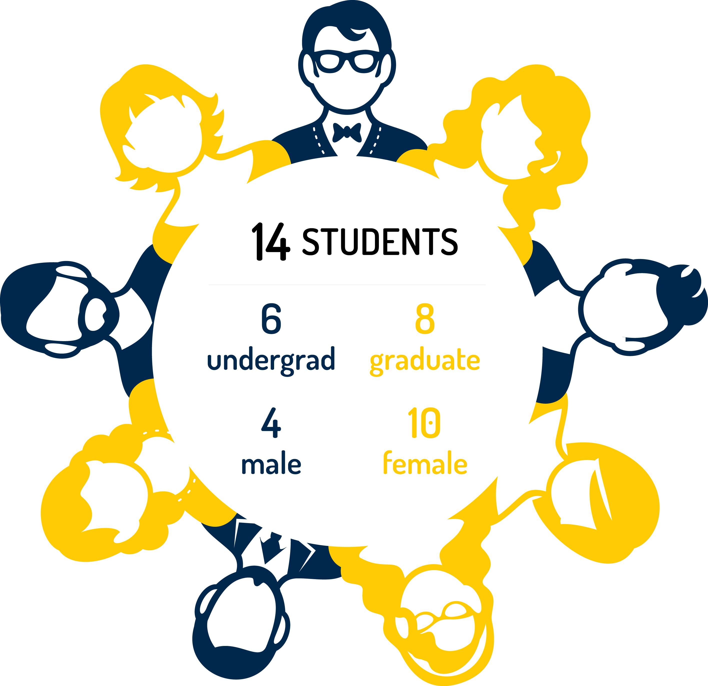
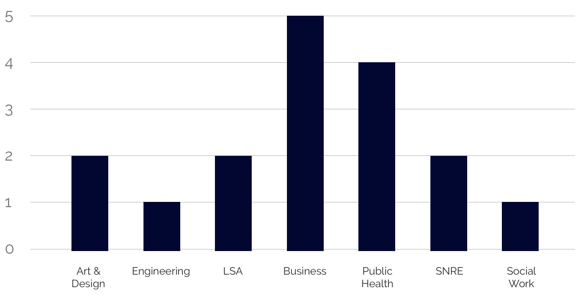
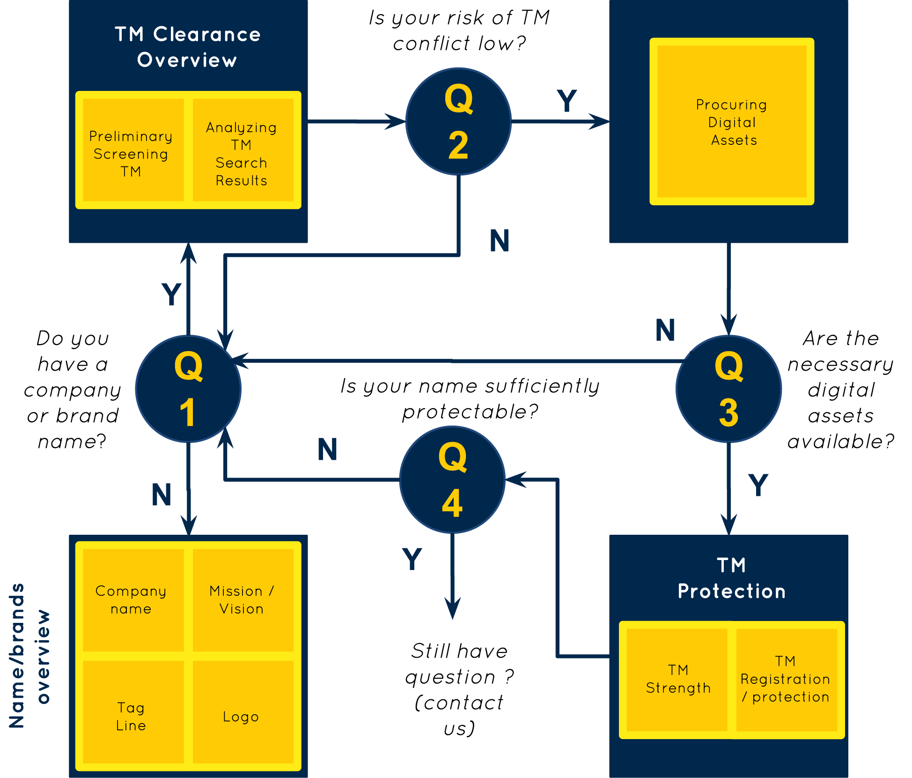
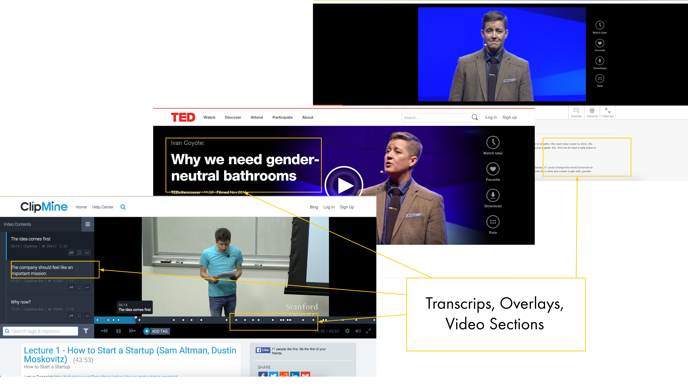
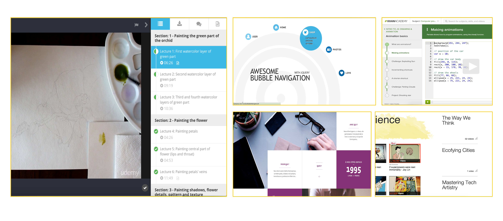
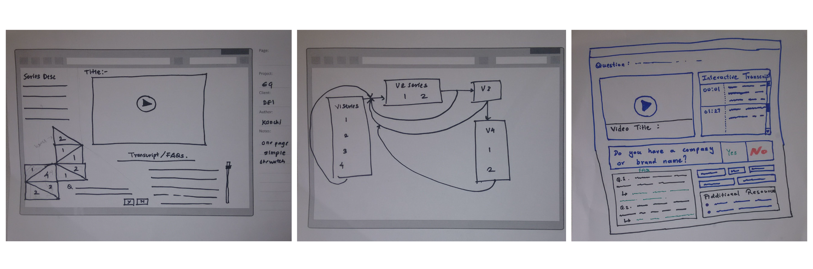
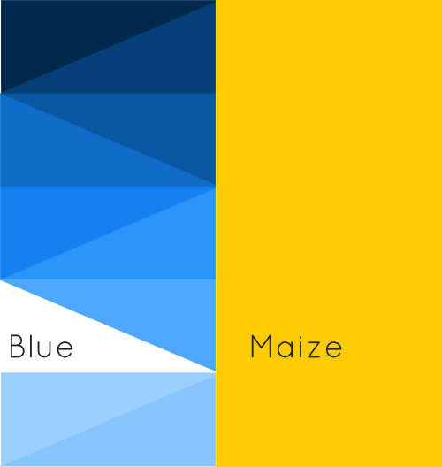
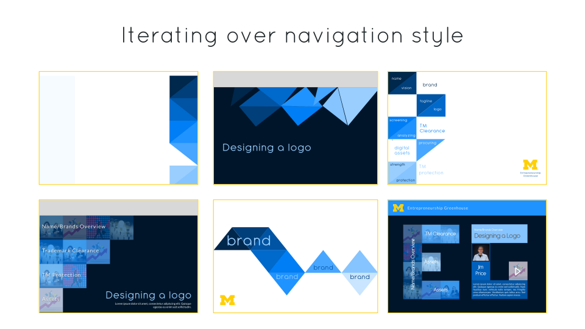

Michigan’s Entrepreneurship Greenhouse is an online educational platform where students can acquire skills and tools applicable to an innovation and entrepreneurial endeavor. As UX designers and consultants, our team designed a pilot that helps students create their own adventure in innovation and entrepreneurship, and facilitates user-driven content generation.
Background
Our client, the Digital Education & Innovation lab (DEI) at the University of Michigan envisioned a platform to gather the vast expanse of UofM domain expertise and apply it when relevant to innovation and entrepreneurship.
As the UofM entrepreneurial ecosystem continued to grow, DEI realized the need to work together, rather than reinventing the wheel. Many entrepreneurial disciplines were running their own separate programs and creating their own workshops and modules, even if it was out of their domain expertise. DEI visualized an entrepreneurial ecosystem that that would let each unit focus on its own expertise and share this domain knowledge amongst the ecosystem to develop stronger content that can be leveraged by everyone.
Some of the major pain-points in this realm that DEI attempted to solve were:
- A disconnected ecosystem
- Difficulty knowing existing expertise and sharing resources across units and disciplines
- Difficulty communicating and sharing content and lessons learned from already delivered material
- Outdated content
What exactly does the user want?
To dive deeper into the psyche of entrepreneurial students, our client conducted focus groups with 14 students from 13 different teams associated with university initiatives such as Innovate in Action, Dare of Dream, optiMize, and Michigan Business Challenge, spread across 7 disciplines.
 The focus group helped narrow the scope of the idea to two widely popular topics: choosing a company name and trademark infringement. This helped delineate the information architecture for the pilot version, which would comprise of 9 videos related to 4 questions.
Comparative Analysis
We analyzed a plethora of MOOCs and video sharing platforms to analyze what they were doing well and draw inspiration from various sources.
 Designing the experience
The high-level themes that our client wanted us to focus on were:
- students should be able to experience a non-traditional navigation that would help them “create their own adventure”
- customize each students’s journey on the website to his/her interests
- high degree of detailing in video pages
We began to ideate and brainstorm on different navigation styles through sketching and low fidelity prototypes. We drew ideas from all our initial work in focus groups and comparative analysis. We designed 5 unique approaches for our client need as outlined below:
Finally, we presented these options to our client and brainstromed with them on picking different elements from each of the designs to create the final navigation style. We also picked a maize and blue color scheme, to keep the pilot website consistent with other university ventures.
 